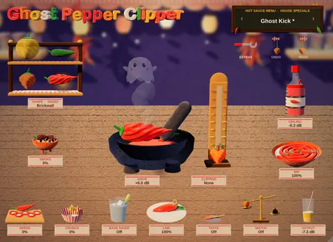

Plugins for FL Studio
All 16 of our plugins run in FL Studio as VST3, on Windows 10 and 11 and on Mac. Here is how to get them showing up, and which ones to try first.
Black Friday: all 16 plugins for $29 with the Full Fridge (was $50), until 1 December. See the deals
Run the installer, then in FL Studio open Options, Manage plugins, and click Find plugins. Ours appear under Plugins for Breakfast. On Windows they install to C:\Program Files\Common Files\VST3, which FL Studio scans by default.
On Windows you may see a blue "Windows protected your PC" box the first time. Click More info, check the name, then Run anyway. Our install page walks through it.
Step-by-step help, including the Windows first-run box: Installing safely.
What to reach for
- Orange Crusher (distortion). Saturation and drive for 808s and drum buses.
- Ghost Pepper Clipper (clipper). A clean clipper for loud drums and masters.
- Popcorn Sandwich Compressor (compressor). A one-dial compressor and expander with a mix control.
- Spice Shelf EQ (equalizer). An EQ you play by taste, with a live curve.
- Popping Candy (glitch and stutter). Glitch and stutter that follows FL Studio's tempo.
- Bread Oven Reverb (reverb). A warm reverb with ducking.
- Cherry on the Top Mastering (mastering). One-dial mastering with streaming loudness targets.
- Butter Spread (stereo widener). Our stereo widener, with a free licence.
 Orange CrusherDistortion and saturation plugin
Orange CrusherDistortion and saturation plugin
Ghost Pepper ClipperClipper plugin Popcorn Sandwich CompressorCompressor plugin
Popcorn Sandwich CompressorCompressor plugin Spice Shelf EQEQ plugin
Spice Shelf EQEQ plugin Popping CandyGlitch and stutter plugin
Popping CandyGlitch and stutter plugin Bread Oven ReverbReverb plugin
Bread Oven ReverbReverb plugin Cherry on the Top MasteringMastering plugin
Cherry on the Top MasteringMastering plugin Butter SpreadFree stereo widener plugin
Butter SpreadFree stereo widener plugin
Get all 16 in the Full FridgeTry them free first
Recipes to try
Questions
How do I install VST3 plugins in FL Studio?
Run the installer, then open Options, Manage plugins and click Find plugins. New plugins show up in the plugin database and the browser.
Do they work on FL Studio for Mac?
Yes. The Mac installers are Apple-notarised and include VST3 and AU, and FL Studio for Mac loads both.
Can I try them before buying?
Yes. Every plugin has a 3-day free trial, and Butter Spread, our stereo widener, comes with a free licence.
More menus
Lo-fiVocalsDrumsMasteringBeginnersCreative effectsHip hop and trapLogic ProAbleton LivePro Tools